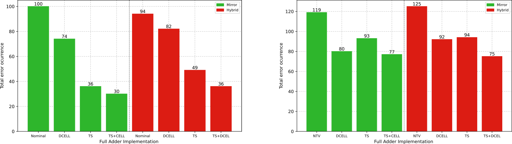
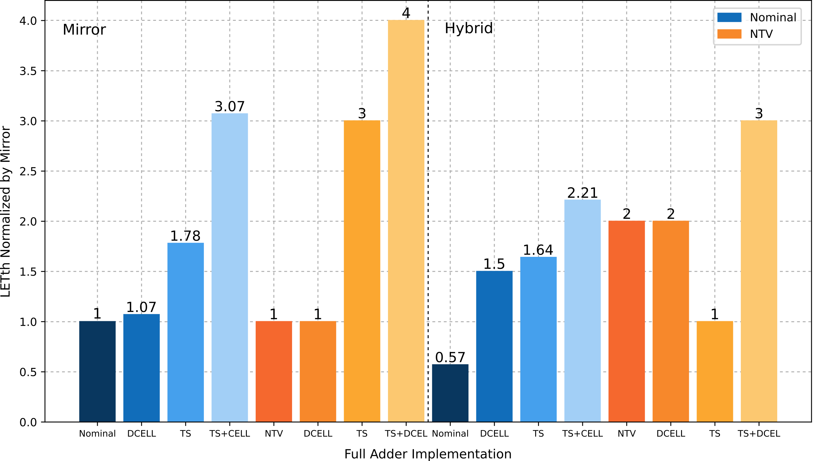

Published in 2022
35th SBC/SBMicro/IEEE/ACM SBCCI
Full Adders
SET Mitigation Techniques for Mirror and Hybrid Full Adder
With continued technology scaling, digital circuits become increasingly vulnerable to radiation-induced faults such as Single Event Transients (SET). This work evaluates the radiation sensitivity of two widely used Full Adder topologies Mirror and Hybrid implemented in 7 nm FinFET technology, considering both nominal and near-threshold voltage operation.
The study also investigates two circuit-level mitigation techniques: Decoupling Cells (DCELL) and Transistor Sizing (TS), applied individually and in combination. The goal is to understand how topology, device technology, and mitigation strategies influence circuit robustness under radiation effects.

Fig. 1 Mirror and Hybrid Full Adder topologies evaluated in this work.
The results show that Transistor Sizing is the most effective individual technique, improving robustness by up to 3× at nominal voltage and up to 4× under near-threshold operation for the Mirror Full Adder. Decoupling Cells also improve robustness, with stronger impact observed in the Hybrid topology.

Combining both techniques provides the best overall results, reducing total error occurrence by nearly 70% at nominal voltage and around 35% under near-threshold operation. However, the effectiveness of each technique depends on the circuit topology and operating conditions. These findings highlight the importance of jointly considering topology and mitigation strategies when designing reliable arithmetic circuits in advanced technologies.
